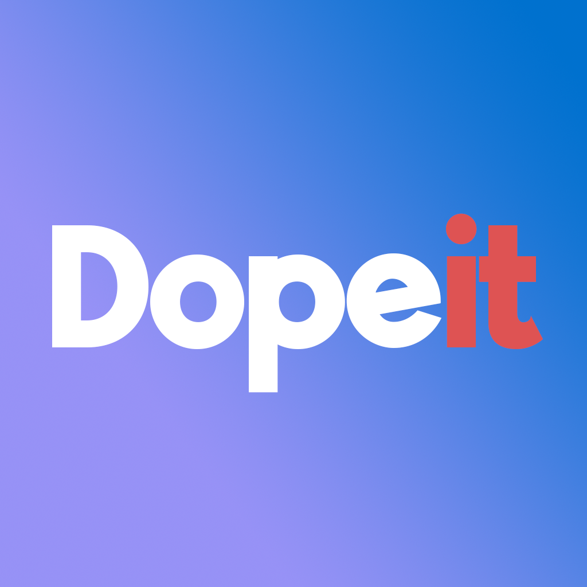

Erik Keifer, a senior at Northport High school, class of 2021. Erik is an avid sports enthusiast and plays basketball, baseball and runs track. During the COVID-19 pandemic, as people are required to be socially distant, it occurred to him that we must still somehow communicate and share our interests and ideas. He thought that a trivia game contest would be fun and challenging. In order to achieve this goal Erik envisioned an app that could bring people together all over the world who are in self isolation and lonely. Accordingly, Erik created the idea for this app and is in charge of developing the questions and the blog. All users of the app have a chance to not only play trivia but also have access to a daily blog where they can voice their opinions about issues they want to share. Keifer believes this app will be revolutionary in bringing people together from all different walks of life.

Be dope and take a shot. How woke are you? Does Stephen Curry have the most three point shots? Does Drake have the most followers? Test your knowledge and chill with your friends. Make the game your new crib. Visit the blog and give us your word. Gamers across the globe have a chance to compete for prizes.
Whether you're an advanced gamer, trivia wiz or looking for a new challenge, our app is the place. dope gamers show off their smarts. At the dope team we make it easy to dunk that prize.
Become entrained by our daily blog and questions. The app as well as a competition is a chance for all gamers to learn.
Key Features:
-Trivia on sports, music, pop culture, movies and more to come.
Get down on our easy to hard questions. Multiple choice and true or false.
If you snooze you lose. Get on the grind and win that prize.
-Visit our blog and give us your take on the debate.
The time is now to express your opinion on our blog. Our team decides how descriptive and detailed your answer is to qualify for more points to win the prize.